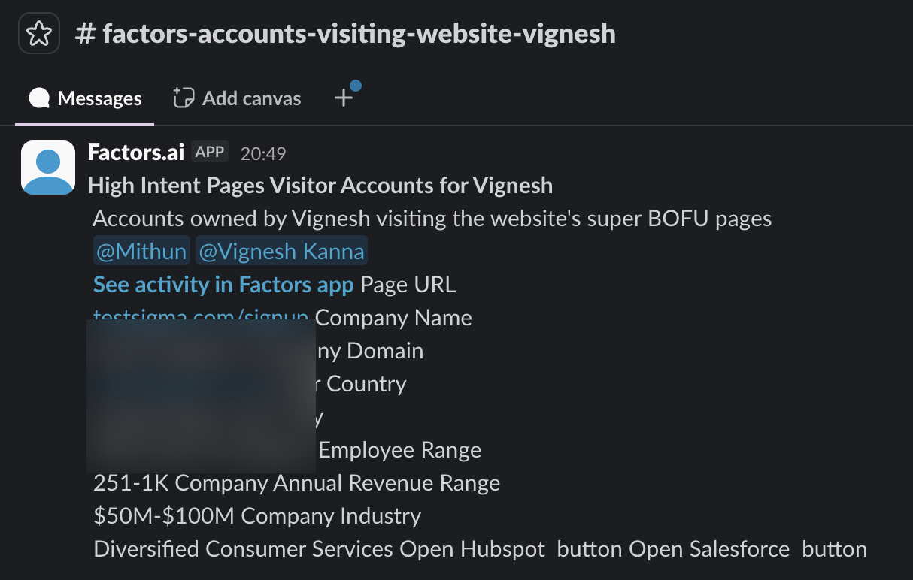
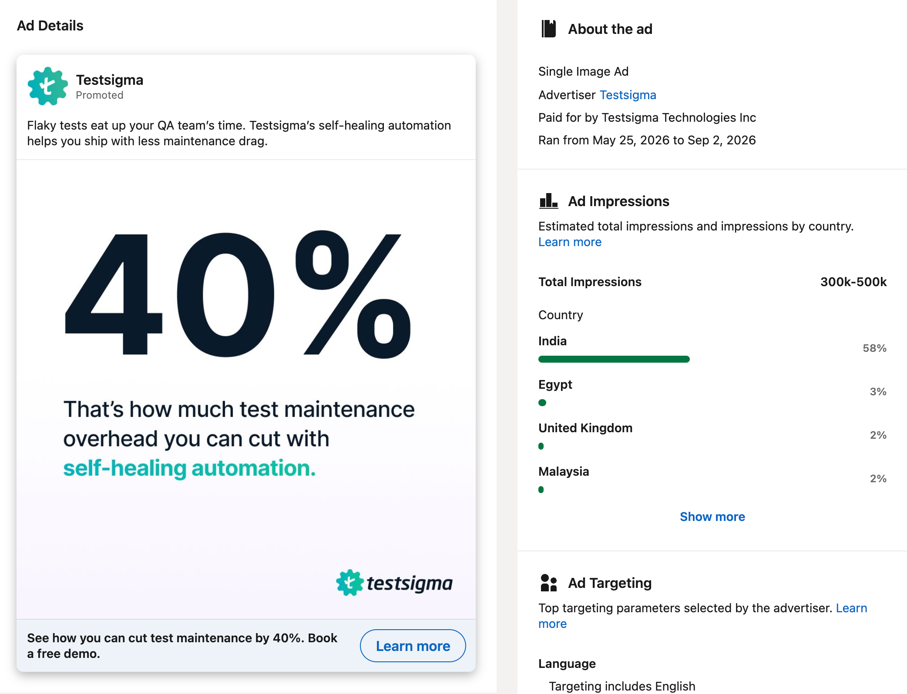
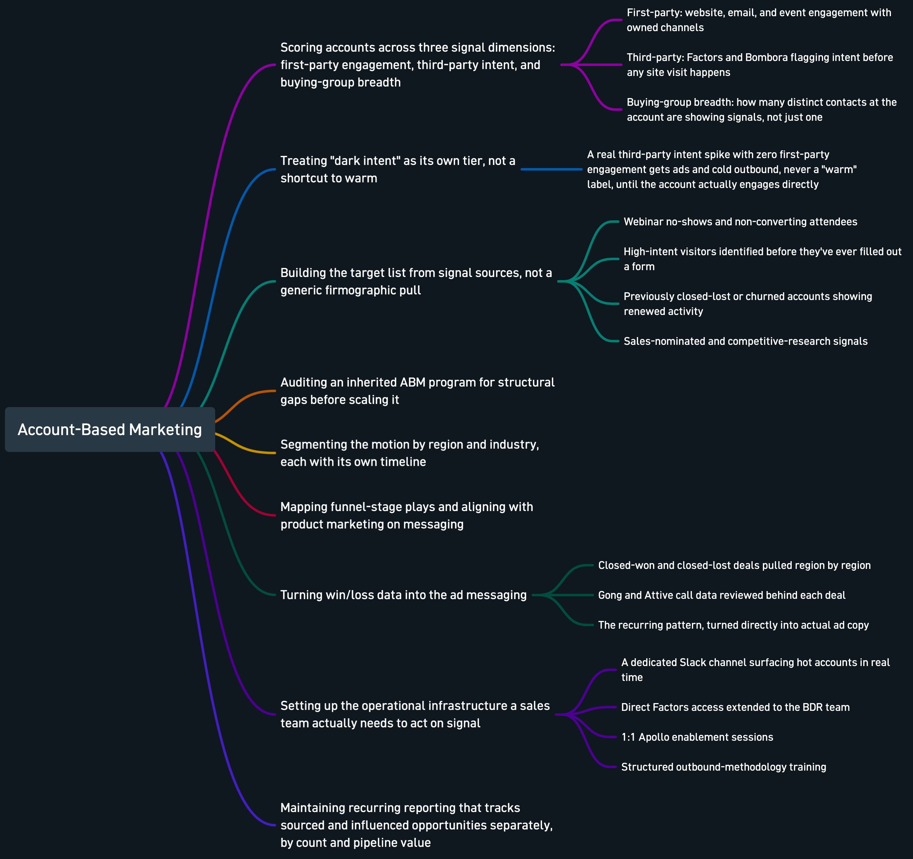

Two stages of ABM: proving the model, then scaling it.
$1.18Min pipeline from a 7-week ABM campaign on ~$27K spend, built on top of a pilot that first proved the model.
The arc
No outboundmotion yet
Factors pilotJul 2024 · $1M
Scaled team1 to full BDR/LDR
ABM ads+ TAM list
$1.18M3 closed-won
Before: no outbound motion at all
Testsigma had no systematic way of knowing which companies were browsing the site with real buying intent. Inbound was the only motion. Outbound existed on paper, but without a way to prioritize who to actually call, it rarely started.
The pilot
In July 2024, I brought in Factors to de-anonymize website traffic, turning anonymous visitors into identifiable companies, then routing high-intent accounts to the right rep automatically. This wasn't a mature ABM program yet. It was a pilot, run to answer one question: is there real pipeline sitting in our anonymous traffic that we're simply not seeing?
The answer was yes. The pilot alone generated $1M in pipeline, and just as importantly, it gave Testsigma's outbound motion something it never had: a working, prioritized list of accounts actually worth calling.

A live Factors alert routing a high-intent account straight to the owning BDR. This is the tooling behind the pilot, still running today. (Company details blurred.)
Scaling it
Once the pilot proved the model, the motion scaled from a single BDR and LDR to the full team. De-anonymization stopped being an experiment and became a standing part of how Testsigma's outbound org operates: a reliable, quarter-over-quarter source of sales-accepted opportunities.
The mature version: pure signal-based ABM
With the foundation in place, I co-drove a dedicated ABM motion, a different level of sophistication from the original pilot. Factors pulled in third-party intent data from G2 and Bombora alongside our own site activity, and those combined signals shaped which accounts made the target list in the first place, not a generic TAM pulled from firmographics alone. LinkedIn ads served directly to that list, coordinated with the BDR-owned account list so that by the time a rep reached out, the account had already heard of Testsigma.
Turning Win/Loss Data Into the Ad Messaging
Signal scoring told us who to target. It didn't tell us what to say. Here's where that came from.
→
Body of work
Turning Win/Loss Data Into the Ad Messaging
Signal scoring decides who to reach and when. It has nothing to say about what to actually tell them once you have their attention. This is where that came from.
The gap
Good targeting, but no clear messaging strategy
Signal scoring told us which accounts were worth reaching and when
It said nothing about which value prop would actually land once we had their attention
The method
Every closed deal, region by region
Pulled all closed-won and closed-lost deals, split by region
Reviewed the actual Gong call recordings and Attive engagement data behind each one
What I was looking for
Where Testsigma's answer actually mattered
In wins: which specific pain point came up on the call, and which of our answers actually moved the deal forward
In losses: where a prospect went cold or picked a competitor despite real engagement, and why
The output
The pattern became the pitch
Test maintenance burden came up repeatedly as the deciding factor, in both wins and losses
That's the specific value prop behind the region's ad copy, the 40% test-maintenance number in the APAC ad below is a direct output of this exercise, not a stat picked because it sounded good

One of the LinkedIn ABM ads served to the APAC target-account list.
In its first 7 weeks, this campaign generated $1.18M in pipeline ($748K of it directly ABM-influenced) on roughly $27K in spend. Three deals closed won in that window, and every one of them was 80%+ ABM-influenced before close.
Two numbers, two different maturity levels. The pilot proved the model existed and gave the org its first outbound motion. The ABM campaign is what that model looks like once it's deliberately built out. Neither one is the whole story without the other.
The internal results readout on the ABM campaign: the source of the $1.18M / $748K figures above.
"With Testsigma, he implemented and drove the adoption of Factors (ABM platform) which kickstarted the outbound motion and enabled to increase outbound pipeline and add 1 Million in Pipeline. Along with this, I have seen Praveen launch our GTM products, Atto and Arcus, live. Praveen has always been warm, easy to collaborate with and bridges the gap together. 10/10, recommended."
Shreyas SachidanandaSMB and Commercial AE at Testsigma. Worked with Praveen on different teams
The full scoring and reporting logic
The two headline numbers above are the outcome. Underneath them is a real system for deciding which accounts are worth a BDR's time, when, and why. Here's how it actually works.
ABM Scoring & Reporting Logic
Intent scoring, temperature tiers, decay, sourced vs. influenced, BDR SLAs, and exit criteria, all in one place.
→
Body of work
ABM Scoring & Reporting Logic
Intent scoring
How an account earns a score
Factors tracks specific page visits and assigns each one a weight. A pricing-page visit counts for a lot more than a general browse, and a docs-page visit, a strong buying signal, carries real weight too. Third-party intent data from G2 and Bombora feeds into the same score, so an account can register real intent before it ever visits our site. These weighted signals sum into a single account score.
Temperature tiers
Four temperature tiers: Hot, Warm, Cool, Ice
Hot (80+ points): BDR-owned, 4-business-hour response SLA
Cool (1-49): marketing-owned, held until a second signal arrives
Ice (0): unassigned, no action
A third-party intent spike with no first-party engagement yet gets separate handling: it queues for ads and cold outbound, but never gets labeled warm until the account actually engages directly.
Why ABM ads exist in this system
Moving an account up a tier without waiting for them to come back
It's the same repeated-exposure effect as a retargeted product ad following you on Instagram. Enough LinkedIn ad impressions on the right account, and their next visit reads as real intent, not cold traffic. That's the intent priming that moves an account from cold toward warm, and warm toward hot.
Decay logic
Heat doesn't last
An account with no activity starts decaying, and after about 90 days with zero touch, it resets. That's what stops every account from getting marked hot forever and calling it a strategy.
Sourced vs. influenced
The distinction most people get wrong
Sourced means ABM revived a genuinely cold or dead account, one no BDR was actively working, and brought them back into a real conversation. Influenced means a BDR was already in touch, and ABM's job was to warm the account up before that call landed, so the rep isn't reaching out cold to a company that's never heard of Testsigma. I track both separately in recurring reporting, by opportunity count and pipeline value, not as one blended ABM number.
BDR SLAs and multi-threading
What happens once an account goes hot
The clock starts immediately: first touch within 4 business hours of the alert, not the next day. From there it's a 7 to 10 touch cadence over roughly 10 days, personalized at the account and persona level. And it can't be one channel to one contact. The same account often has ten or more people who could have been the one browsing our site, so outreach hits multiple contacts across multiple channels: LinkedIn, email, and calls together, instead of a single email marked done.
Exit criteria
Knowing when to stop
Showing ads to an account that's already bought a competitor's product is wasted spend, and it's one of the real gaps I found and fixed. If a BDR reports an account is dead or gone with a competitor, it comes out of the ABM list. Ads without an exit condition aren't a program. They're just spend.
The full activity behind this campaign
Everything above happened inside this specific process, the same one regardless of which company I'm doing it at. Click to see it full size.

Why this matters beyond the numbers
ABM only works if sales and marketing are actually reading the same signal. The recommendation above is from an AE, not a peer marketer, evidence that this wasn't a campaign run in isolation, but a motion built with the sales team, for the sales team.